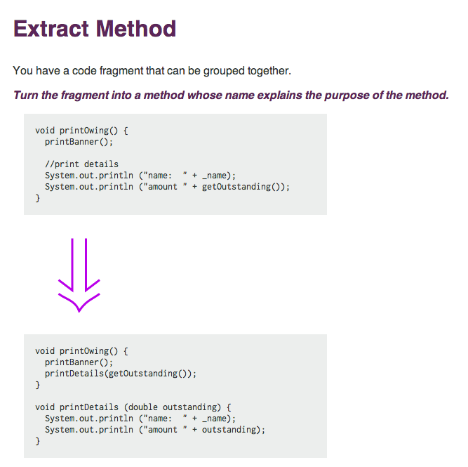
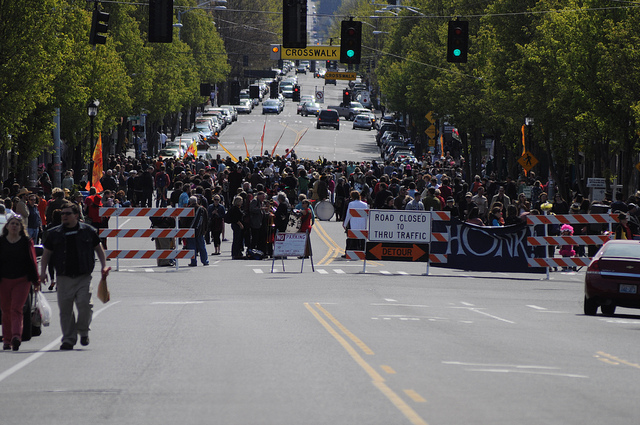
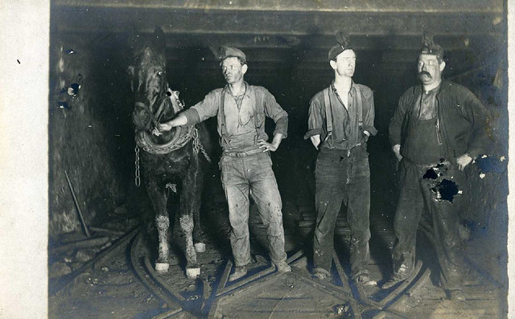
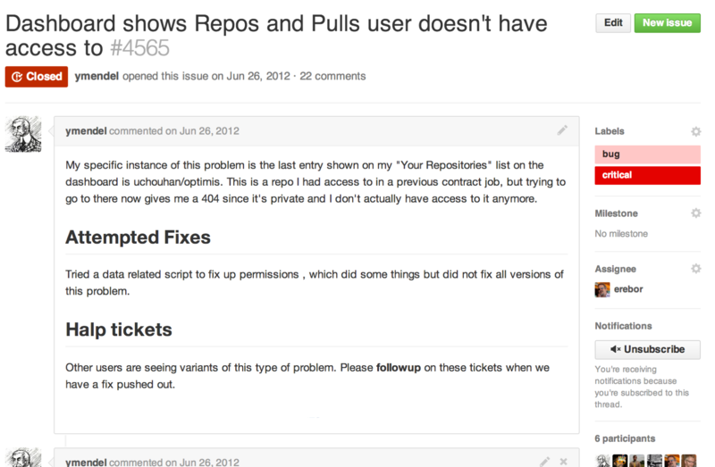

Long Refactorings
Rick Bradley
GitHub, Inc.

github.com/rick
long refactorings
long refactorings are simply refactorings
only, (IN HINDSIGHT) they end up taking a lot longer than most refactorings
Stepping back for a second...
What is "refactoring"?
Refactoring...
"behavior-preserving changes to the implementation of a system"


http://refactoring.com/catalog/extractMethod.html

http://refactoring.com/catalog/inlineMethod.html
"behavior-preserving changes to the implementation of a system"
This is really only true for the smallest of refactorings.
In larger-scale refactorings we're typically chaining together a series of behavior-preserving changes, interspersed with behavior changes.
The important things are to always know which is which, and to do them intentionally.
why do we refactor?
wankery
(primarily)
but also...
to understand the system
to understand the system
to bring behavior under test
to understand the system
to bring behavior under test
to extract code for reuse
to understand the system
to bring behavior under test
to extract code for reuse
to improve some facet of the system (performance, memory use, coupling, cohesion, etc., etc., etc.)
to understand the system
to bring behavior under test
to extract code for reuse
to improve some facet of the system (performance, memory use, coupling, cohesion, etc., etc., etc.)
to reuse existing code elsewhere
to understand the system
to bring behavior under test
to extract code for reuse
to improve some facet of the system (performance, memory use, coupling, cohesion, etc., etc., etc.)
to reuse existing code elsewhere
to make room for a new feature
to understand the system
to bring behavior under test
to extract code for reuse
to improve some facet of the system (performance, memory use, coupling, cohesion, etc., etc., etc.)
to reuse existing code elsewhere
to make room for a new feature
to prepare to fix a bug
to understand the system
to bring behavior under test
to extract code for reuse
to improve some facet of the system (performance, memory use, coupling, cohesion, etc., etc., etc.)
to reuse existing code elsewhere
to make room for a new feature
to prepare to fix a bug
...
to understand the system
to bring behavior under test
to extract code for reuse
to improve some facet of the system (performance, memory use, coupling, cohesion, etc., etc., etc.)
to reuse existing code elsewhere
to make room for a new feature
to prepare to fix a bug
optimization
optimization
no, I mean, like, life optimization

refactoring a toy system
refactoring a toy system
it could be for learning purposes
or perhaps the hope is that some day it will grow up to be a big system
one that someone has a use for
refactoring a toy system
The value is in building something useful
Even here, though, we have finite time and resources
So we choose what to work on

refactoring a system that people are actively using
Again, limited time and resources,
so we must make choices about what to work on,
because the time spent on one thing cannot be spent on another.
refactoring to understand a system
refactoring to understand a system
is useful if it is directed towards implementing a feature or fixing a bug
refactoring to bring behavior under test
refactoring to bring behavior under test
refactoring to bring behavior under test
is wasteful, unless it's being immediately driven by fixing a bug or implementing a feature
refactoring to extract code for reuse
refactoring to extract code for reuse
is wasteful, unless we have reached the point where a new feature is ready to use that extraction
refactoring to improve some facet of the system
refactoring to improve some facet of the system
is generally a good reason to refactor, if this is the most important thing you could be working on right now
refactoring to make room for a new feature
refactoring to make room for a new feature
is great, presuming you're implementing that feature right now
refactoring to prepare to fix a bug
refactoring to prepare to fix a bug
also great, if you're fixing the bug right now
optimization
part deux

most refactorings are small or trivial
There's really no estimation involved:
look at the code, start making the changes.
We're using techniques in Martin Fowler's Refactoring book.
The refactorings are a commit or few,
inside the boundary of a larger pull request,
dedicated to a feature or a bugfix.
many refactorings are a bit larger
Suitable for a pair of programmers working on an afternoon,
we can estimate them fairly accurately or do without estimation.
We can use simple tools and processes, like feature branches, pair programming, a second or third Pull Request.
We start to use more advanced techniques.

We start to draw on these techniques
characterization testing, refactoring to tests, sensing variables, etc.
We eventually encounter refactorings that we know are projects
We eventually encounter refactorings that we know are projects
These refactorings are non-trivial and perhaps not even possible.
Even the process of estimation is difficult.

We only consider them because they are roadblocks to important features, or there are real quality problems in this part of the system, and piecemeal attempts at bugfixing fail to eliminate problems.
Developers who go into these areas come back angry and muttering, they turn to the solace of drink.
Good people are reduced to bad things.
Tackling these ugly jobs is what we're here to talk about.
So how do we tackle these huge refactorings?
There are enough risks that success is unlikely
There are enough risks that success is unlikely
So, aim to minimize costs.
There are enough risks that success is unlikely
Aim to never be a roadblock.
There are enough risks that success is unlikely
Avoid building the Second System™ -- the promised land of endless biscuits and gravy.
There are enough risks that success is unlikely
Integrate constantly. Long-running branches are kryptonite.
There are enough risks that success is unlikely
Don't go in for Flag Day.
There are enough risks that success is unlikely
When the project "lands", it's quietly been in use for weeks or months already.
There are enough risks that success is unlikely
Be like water.

Start with exploration
Spec out possible alternate architectures as proofs of concept.
Start with exploration
Various people in ones and twos take stabs at feasibility over the course of months or years.
Start with exploration
Do throw-away experimental refactorings of a smaller scope just to see if a large refactoring might be possible.

use techniques like those from The Mikado Method to even explore the possible refactorings

- Start with a goal
- Do the first small refactoring along the way
- See what breaks -- write down a graph node
- Repeat until no more dependencies
getting real
"abilities"

June 2012

July 2012

July 2012

July 2012

July 2012

August 2012

September 2012

September 2012

September 2012

September 2012

November 2012
A Long Refactoring Kicks Off
Ongoing quality problems in an important part of the system
Repeated bugfixing did not improve quality significantly
High level feature changes roadblocked by this core subsystem


The Abilities project:
4 primary developers
795 Pull Requests and Issues from November 2012 until August 2014
Multiple iterations of complete new permissioning systems
Tight collaboration with ongoing Organization improvements
(let's look at those issues)
November 2012

Capabilities lived as a new permissions system, side-by-side with existing permissions until August, 2013
Until Abilities came onto the scene.
Extensive performance testing led us to remodel capabilities so that granting operations were more performant
How did we know?


We built tools to let us (and anyone) run two code paths side-by-side.
Then performance data is published by instrumentation into our graphite cluster.
Don't Roadblock
Long-running branches are kryptonite.
We can land short-lived branches to "dark ship" new code.
With science and instrumentation tools we can gather real production measurements in a controlled fashion.
How to run two permission systems at the same time
One system is the source of all truth.
Have a migrator that creates the second system's data from the first.
The data for the second system is updated by actions on the first system.
Start with just a subset of users.
Trash the data and re-run the migrator.
Eventually never re-run the migrator.

The project will ebb and flow
Always have enough side project work available that you can stay fresh and not get bogged down.
People will come and go (and often return) on a truly long refactoring.
You will be at an impasse many times.
Rely on your team, and allow yourself to experiment with crazy things.
Your creativity is an asset.

Sometimes it's just hard to figure out if the code you are changing is even being used. Try to be 100% safe.

Just a glorified wrapper around ruby's caller method.

... which can be put to holy or horrible uses.

Because, really, we're all such horrible people.
Staying alive
Keep your sense of humor.
Rely on your peoples.
Keep close.
Work-life balance is important.
This is a marathon.
Take a vacation.
You actually can leave and do something else.
It's fine.
Setbacks
Repository Networks were all jacked up at the model level.
Setbacks
Repository Networks were all jacked up at the model level.
"plan owner" data was all shitty due to old bad job processes.
Setbacks
Repository Networks were all jacked up at the model level.
"plan owner" data was all shitty due to old bad job processes.
Forking and collaborators were all sorts of stupid.
Setbacks
You re-learn that you everything is connected.
You end up having to fix way more things than you hoped.
And you make some trade-offs and draw boundaries.
Setbacks
So we wrote data quality scripts to find problems.
We wrote transition scripts to clean up problems.
We wrote throttling tools to make massive transitions never hurt production.

Estimation
There is no way I have seen to estimate a long refactoring.
What you can do is not be a blocker, and continue to negotiate what is the most important thing to fix Right Now.

Enterprise
Enterprise
Installed GitHub instances behind company firewalls.
Often 6 months behind github.com code base.
Customers can be 300+ days behind last Enterprise release.
We have almost zero visibility into installed versions and data quality at a customer's site.
There are disabled and enabled github.com features on Enterprise.
Enterprise
Data transitions for github.com are bundled with migrations for Enterprise upgrades.
Database tables and ActiveRecord models persist in github.com code until Enterprise is fully upgraded.
Shipping
Shipping
Made abilities be the "source of truth" for read queries on teams, and orgs.
Made abilities be the "source of truth" for repository read queries.
Continue writing data to both permissions systems.
Gradual removal of science experiment code.


Other long ships

Rails 3
Yup. LOL.
GitRPC
Image credits:
https://www.flickr.com/photos/mozul/31304173/ https://www.flickr.com/photos/uspn/4894253589/ https://www.flickr.com/photos/nate_marsh/5213604228/ https://www.flickr.com/photos/steveallen/3324325493/ https://www.flickr.com/photos/ckrug/162099232/ https://www.flickr.com/photos/slagheap/156203875/
Image credits:
https://www.flickr.com/photos/j3net/480637896/ https://www.flickr.com/photos/jmabel/4516193497/ https://www.flickr.com/photos/27271711@N04/3643199789/ https://www.flickr.com/photos/pixbymaia/9662665997/ https://www.flickr.com/photos/usnavy/7070501561/ https://www.flickr.com/photos/loshak/4839254506/
Note: dat rooster is origin unknown